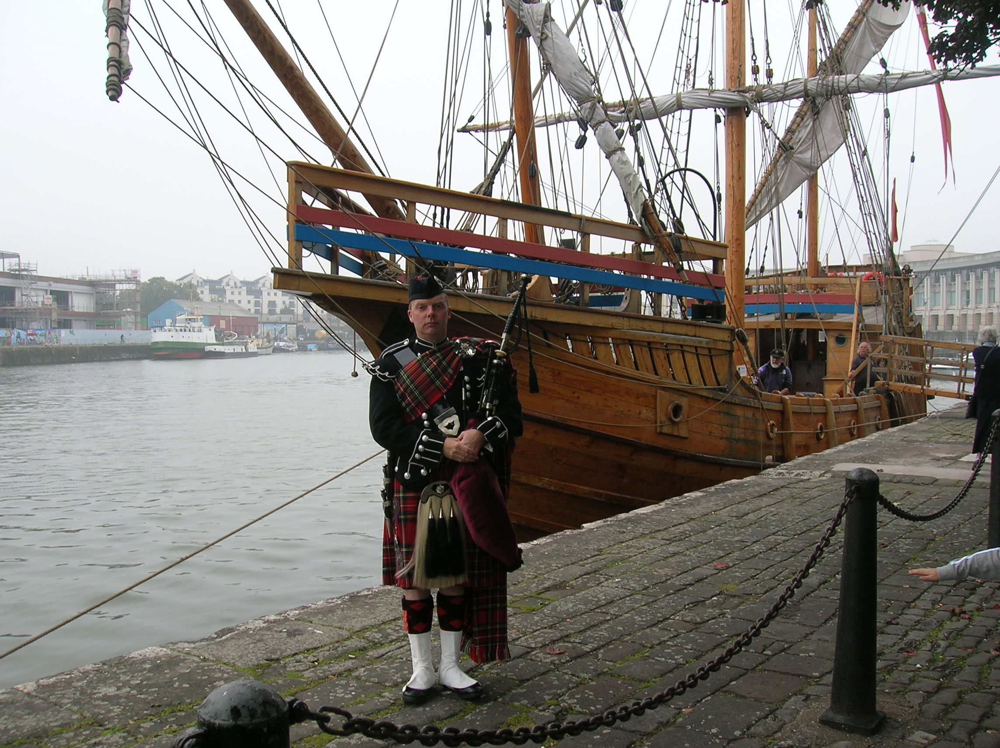

Why Hire Julian?
Julian has been playing the bagpipes for over 40 years, and joined the Scots Guards regiment of the Army at the age of 17.
Being in the Scots Guards pipe band, he amassed a large repetoire and gained a lot of experience from performing many parades, including 'The Trooping of the Colour' celebration.
Julian currently plays in the City of Bristol Pipes and Drums, as Pipe Major, and has been for 20 years.

Piping outside the 'Matthew'.